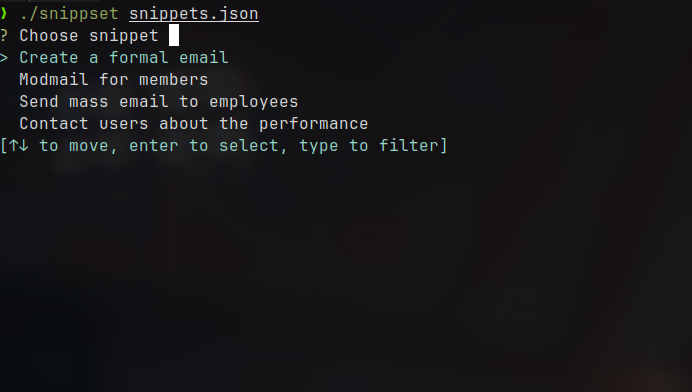
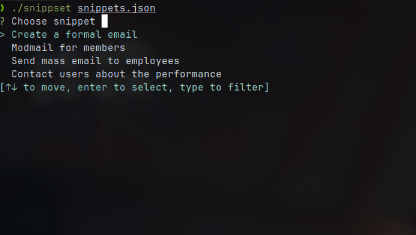

RustSnippset
Snippet editing tool
Snippet editing tool
I created a Snippet tool where you put text and you choose areas inside those text to be editable. When you launch the terminal CLI tool a vim like editor shows up while you type and fill in those areas.
This Snippet tool is designed to enhance text editing by allowing users to designate specific sections of the text as editable. This makes it ideal for scenarios where you need to repeatedly fill out structured text templates, ensuring consistency and efficiency.
The tool provides a seamless experience by leveraging a Vim-like editor in the terminal, making it familiar and easy to use for those comfortable with Vim. It streamlines the process of text editing, saving time and reducing errors.